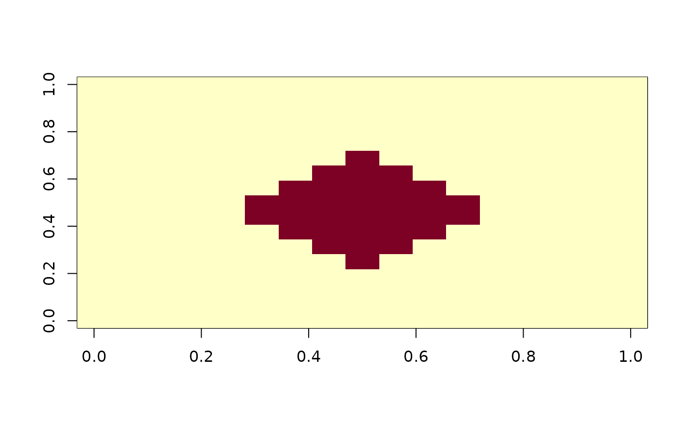

Sample '3D' volume in the world (anatomical 'RAS') space
Source: R/image-resample3d.R
resample_3d_volume.RdLow-level implementation to sample a '3D' volume into given orientation and shape via a nearest-neighbor sampler.
Arguments
- x
image (volume) to be sampled:
dim(x)must have length of 3- new_dim
target dimension, integers of length 3
- vox2ras_old
from volume index (column-row-slice) to
'RAS'(right-anterior-superior) transform: the volume index starts from 0 (C-style) instead of 1 (R-style) to comply with'NIfTI'transform.- vox2ras_new
the targeting transform from volume index to
'RAS'- na_fill
default numbers to fill if a pixel is out of bound; default is
NAoras.raw(0)if inputxis raw type
Value
A newly sampled volume that aligns with x in the anatomical
'RAS' coordinate system. The underlying storage mode is the same as
x
Examples
# up-sample and rotate image
x <- array(0, c(9, 9, 9))
x[4:6, 4:6, 4:6] <- 1
vox2ras <- matrix(nrow = 4, byrow = TRUE, c(
0.7071, -0.7071, 0, 0,
0.7071, 0.7071, 0, -5.5,
0, 0, 1, -4,
0, 0, 0, 1
))
new_vox2ras <- matrix(nrow = 4, byrow = TRUE, c(
0, 0.5, 0, -4,
0, 0, -0.5, 4,
0.5, 0, 0, -4,
0, 0, 0, 1
))
y <- resample_3d_volume(
x,
c(17, 17, 17),
vox2ras_old = vox2ras,
vox2ras_new = new_vox2ras,
na_fill = 0
)
image(y[9,,])
